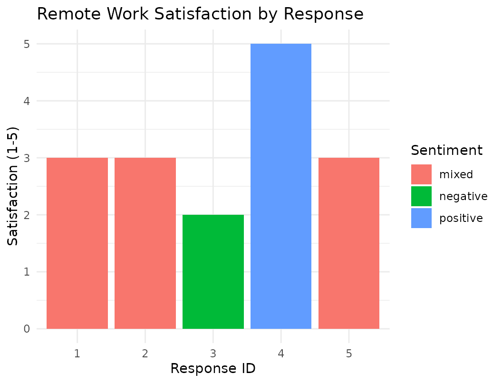

Introduction
When using llm_extract(), you must define a schema using
field specification functions. These functions tell the LLM what
information to extract and what type of output to return. Each field
specification includes a description that guides the LLM, and for
categorical fields, a list of allowed values.
knitr::kable(
data.frame(
Function = c("`field_category()`", "`field_integer()`", "`field_number()`",
"`field_text()`", "`field_boolean()`", "`field_array()`"),
Output_Type = c("Categorical", "Integer", "Numeric",
"Free text", "TRUE/FALSE", "List/Array"),
Use_Case = c(
"Sentiment, design type, binary outcomes",
"Ratings, counts, sample sizes",
"Effect sizes, p-values, means",
"Limitations, conclusions, open-ended responses",
"Significance flags, preregistration indicators",
"Multiple themes, outcomes, or limitations"
)
),
caption = "Field specification functions for structured extraction in `llm_extract()`",
align = c("l", "l", "l"),
format = "markdown"
)| Function | Output_Type | Use_Case |
|---|---|---|
field_category() |
Categorical | Sentiment, design type, binary outcomes |
field_integer() |
Integer | Ratings, counts, sample sizes |
field_number() |
Numeric | Effect sizes, p-values, means |
field_text() |
Free text | Limitations, conclusions, open-ended responses |
field_boolean() |
TRUE/FALSE | Significance flags, preregistration indicators |
field_array() |
List/Array | Multiple themes, outcomes, or limitations |
Example 1: Extracting Therapy Session Information
Let’s extract structured information from therapy session notes using multiple field types.
# Sample therapy notes
therapy_notes <- data.frame(
session_id = 1:3,
note = c(
"Client reported significant reduction in anxiety symptoms after 8 weeks of CBT.
Reported using coping strategies daily. GAD-7 score dropped from 14 to 6.",
"Client struggled with homework compliance this week. Only completed 2 of 5
assigned exercises. Reported feeling overwhelmed by work demands.",
"Breakthrough session! Client identified core belief about worthlessness.
Emotional but productive. Completed all homework. PHQ-9 improved from 18 to 12."
),
stringsAsFactors = FALSE
)
# Define extraction schema
therapy_fields <- list(
# Categorical: overall session quality
session_quality = field_category(
description = "Overall quality/progress of the therapy session",
categories = c("positive", "mixed", "negative")
),
# Numeric: clinical scores
anxiety_score = field_number(
description = "GAD-7 score (0-21, higher = more anxiety), if reported",
required = FALSE
),
depression_score = field_number(
description = "PHQ-9 score (0-27, higher = more depression), if reported",
required = FALSE
),
# Integer: homework completion
homework_completed = field_integer(
description = "Number of homework exercises completed (out of assigned total)"
),
# Boolean: whether a breakthrough occurred
breakthrough = field_boolean(
description = "Whether the session involved a therapeutic breakthrough or insight"
),
# Text: key themes
key_themes = field_text(
description = "Main themes or topics discussed (max 10 words)"
)
)
# Extract
results <- therapy_notes %>%
llm_extract(
fields = therapy_fields,
input = note,
id = session_id,
prompt_task = "Extract key clinical information from this therapy session note.",
chat = chat,
n_draws = 3,
show_progress = TRUE
)
# View results
head(results)#> id
#> 1 1
#> 2 2
#> 3 3
#> 4 1
#> 5 2
#> 6 3
#> note
#> 1 Client reported significant reduction in anxiety symptoms after 8 weeks of CBT. \n Reported using coping strategies daily. GAD-7 score dropped from 14 to 6.
#> 2 Client struggled with homework compliance this week. Only completed 2 of 5 \n assigned exercises. Reported feeling overwhelmed by work demands.
#> 3 Breakthrough session! Client identified core belief about worthlessness. \n Emotional but productive. Completed all homework. PHQ-9 improved from 18 to 12.
#> 4 Client reported significant reduction in anxiety symptoms after 8 weeks of CBT. \n Reported using coping strategies daily. GAD-7 score dropped from 14 to 6.
#> 5 Client struggled with homework compliance this week. Only completed 2 of 5 \n assigned exercises. Reported feeling overwhelmed by work demands.
#> 6 Breakthrough session! Client identified core belief about worthlessness. \n Emotional but productive. Completed all homework. PHQ-9 improved from 18 to 12.
#> draw_id model_name provider
#> 1 1 llama3 ollama
#> 2 1 llama3 ollama
#> 3 1 llama3 ollama
#> 4 2 llama3 ollama
#> 5 2 llama3 ollama
#> 6 2 llama3 ollama
#> prompt params_hash
#> 1 Extract key clinical information from this therapy session note. f9adadf6
#> 2 Extract key clinical information from this therapy session note. f9adadf6
#> 3 Extract key clinical information from this therapy session note. f9adadf6
#> 4 Extract key clinical information from this therapy session note. f9adadf6
#> 5 Extract key clinical information from this therapy session note. f9adadf6
#> 6 Extract key clinical information from this therapy session note. f9adadf6
#> query_time session_quality anxiety_score depression_score
#> 1 2026-05-29 09:09:13 positive 8 0
#> 2 2026-05-29 09:09:13 positive 0 <NA>
#> 3 2026-05-29 09:09:13 positive <NA> 12
#> 4 2026-05-29 09:10:01 positive 8 0
#> 5 2026-05-29 09:10:01 positive 0 <NA>
#> 6 2026-05-29 09:10:01 positive <NA> 12
#> homework_completed breakthrough key_themes temperature max_tokens
#> 1 1 TRUE anxiety 0 500
#> 2 2 FALSE overwhelmed 0 500
#> 3 1 TRUE worthlessness 0 500
#> 4 1 TRUE anxiety 0 500
#> 5 2 FALSE overwhelmed 0 500
#> 6 1 TRUE worthlessness 0 500Example 2: Systematic Review Data Extraction
This example demonstrates extracting multiple fields from research abstracts for literature review.
abstracts <- data.frame(
study_id = 1:3,
abstract = c(
"We randomized 120 participants (mean age 45.2, SD = 8.3) to either
mindfulness-based stress reduction (n=60) or waitlist control (n=60).
Primary outcome was anxiety (GAD-7). Results showed significant
improvement (d = 0.72, p < .001, 95% CI [0.45, 0.99]).",
"This meta-analysis included 28 studies (total N = 3,247 participants)
examining the relationship between social media use and depression in
adolescents. Overall effect was small but significant (r = 0.18,
95% CI [0.12, 0.24], p < .001). Heterogeneity was moderate (I² = 45%).",
"A longitudinal study followed 89 mother-child dyads (children aged 3-5 years)
for 2 years. No significant effects of authoritative parenting on emotion
regulation were found (β = 0.08, p = .32)."
),
stringsAsFactors = FALSE
)First, define what information you need to extract from each
abstract. The field_*() functions ensure consistent, typed
output:
# Define fields for systematic review
review_fields <- list(
# Numeric fields
sample_size = field_number(
description = "Total number of participants in the study"
),
effect_size = field_number(
description = "Effect size (Cohen's d, Hedges' g, or r), if reported",
required = FALSE
),
p_value = field_number(
description = "P-value for the main finding (extract as decimal, e.g., 0.001)",
required = FALSE
),
# Categorical fields
study_design = field_category(
description = "Study design",
categories = c("RCT", "meta-analysis", "longitudinal", "cross-sectional", "qualitative")
),
significance = field_category(
description = "Were the main findings statistically significant?",
categories = c("yes", "no", "mixed", "not reported")
),
population = field_category(
description = "Population studied",
categories = c("adults", "adolescents", "children", "older adults", "clinical", "community")
),
# Boolean field
heterogeneity_reported = field_boolean(
description = "Does the study report heterogeneity statistics (I², Q, tau²)?",
required = FALSE
),
# Text field for additional notes
notes = field_text(
description = "Any notable methodological details (max 20 words)",
required = FALSE
)
)Process the abstracts with n_draws = 3 to measure
extraction reliability:
# Extract data
review_results <- abstracts %>%
llm_extract(
fields = review_fields,
input = abstract,
id = study_id,
prompt_task = "Extract key study characteristics from this abstract for a systematic review.",
chat = chat,
n_draws = 3,
show_progress = TRUE
)
head(review_results)Usesummarise_draws() to check how consistently the LLM
extracted each field across the 3 draws:
# Assess extraction reliability
reliability <- review_results %>%
group_by(id) %>%
summarise_draws(sample_size, study_design, significance, population)
print(reliability)
#> # A tibble: 12 × 9
#> column id n_draws n_valid majority agreement entropy uncertain
#> <chr> <int> <int> <int> <chr> <dbl> <dbl> <lgl>
#> 1 sample_size 1 3 3 120 1 0 FALSE
#> 2 sample_size 2 3 3 3247 1 0 FALSE
#> 3 sample_size 3 3 3 89 1 0 FALSE
#> 4 study_design 1 3 3 RCT 1 0 FALSE
#> 5 study_design 2 3 3 meta-analysis 1 0 FALSE
#> 6 study_design 3 3 3 longitudinal 1 0 FALSE
#> 7 significance 1 3 3 yes 1 0 FALSE
#> 8 significance 2 3 3 yes 1 0 FALSE
#> 9 significance 3 3 3 no 1 0 FALSE
#> 10 population 1 3 3 adults 1 0 FALSE
#> 11 population 2 3 3 adolescents 1 0 FALSE
#> 12 population 3 3 3 children 1 0 FALSE
#> # ℹ 1 more variable: distribution <chr>The output shows perfect reliability across all fields (agreement =
1, entropy = 0). For sample_size, all 3 draws produced
identical numbers (120, 3247, and 89 respectively). For categorical
fields like study_design and significance, the
distribution column confirms complete consistency (e.g.,
“RCT (3)” indicates all 3 draws classified the design as
RCT). This high agreement indicates that for these clearly written
abstracts, the LLM’s extractions are trustworthy without manual
verification.
Example 3: Qualitative Theme Extraction with Arrays
This example demonstrates how to use field_array() to
extract multiple themes or features from open-ended survey responses.
Unlike scalar fields that return a single value, array fields return a
list column where each cell contains multiple items (e.g., all strengths
mentioned in a response).
# Open-ended survey responses
feedback_data <- data.frame(
respondent_id = 1:3,
feedback = c(
"The app helped me track my mood daily. The graphs were insightful and
the reminders kept me accountable. However, the interface felt cluttered
and navigation was confusing at times. Customer support was responsive.",
"Loved the breathing exercises! Very relaxing. The educational content
was clear and evidence-based. The community forum was supportive.
Wish there were more customization options and offline access.",
"Found the CBT techniques very practical. The weekly progress reports
were motivating. The app crashed frequently which was frustrating.
The onboarding process was too long."
),
stringsAsFactors = FALSE
)
# Define fields with arrays
qualitative_fields <- list(
# Arrays for multiple themes
strengths = field_array(
description = "List of strengths or positive features mentioned",
item_type = field_text("A single strength or positive feature")
),
weaknesses = field_array(
description = "List of weaknesses or areas for improvement mentioned, separated by commas",
item_type = field_text("A single weakness or negative feature")
),
features_mentioned = field_array(
description = "List of specific features mentioned by name, separated by commas",
item_type = field_text("Name of a feature mentioned")
),
# Numeric summary
strength_count = field_number(
description = "Number of strengths mentioned"
),
weakness_count = field_number(
description = "Number of weaknesses mentioned"
),
# Categorical overall sentiment
overall_sentiment = field_category(
description = "Overall sentiment of the feedback",
categories = c("positive", "mixed", "negative")
),
# Text field for key quote
representative_quote = field_text(
description = "Extract a representative quote from the feedback (max 15 words). Copy exactly.",
required = TRUE
)
)
# Extract qualitative data
qualitative_results <- feedback_data %>%
llm_extract(
fields = qualitative_fields,
input = feedback,
id = respondent_id,
prompt_task = "Analyze this user feedback and extract key information.",
chat = chat,
n_draws = 2,
show_progress = TRUE
)
head(qualitative_results)The resulting qualitative_results data frame has a special structure.
Looking at str(qualitative_results), notice that the array
fields (strengths, weaknesses,
features_mentioned) are list columns:
str(qualitative_results$strengths)
#> List of 6
#> $ : chr [1:4] "helped track mood" "insightful graphs" "reminders kept me accountable" "responsive customer support"
#> $ : chr [1:3] "breathing exercises" "educational content" "community forum"
#> $ : chr [1:2] "practical CBT techniques" "weekly progress reports were motivating"
#> $ : chr [1:4] "helped track mood" "insightful graphs" "reminders kept me accountable" "responsive customer support"
#> $ : chr [1:3] "breathing exercises" "educational content" "community forum"
#> $ : chr [1:2] "practical CBT techniques" "weekly progress reports were motivating"Each row in the data frame corresponds to one draw (with
n_draws = 2, we have 2 rows per respondent). The
strengths column contains a list where each element is a
character vector of multiple strengths. For example, respondent 1’s
first draw reported 4 distinct strengths, while respondent 2 reported 3
strengths.
For certain analyses like counting frequency or creating bar charts, you may want to unnest the list columns into long format (one row per individual theme):
# Unnest arrays to see individual themes
strengths_long <- qualitative_results %>%
select(id, draw_id, strengths) %>%
tidyr::unnest(strengths, keep_empty = TRUE)
print(strengths_long)
#> # A tibble: 18 × 3
#> id draw_id strengths
#> <int> <int> <chr>
#> 1 1 1 helped track mood
#> 2 1 1 insightful graphs
#> 3 1 1 reminders kept me accountable
#> 4 1 1 responsive customer support
#> 5 2 1 breathing exercises
#> 6 2 1 educational content
#> 7 2 1 community forum
#> 8 3 1 practical CBT techniques
#> 9 3 1 weekly progress reports were motivating
#> 10 1 2 helped track mood
#> 11 1 2 insightful graphs
#> 12 1 2 reminders kept me accountable
#> 13 1 2 responsive customer support
#> 14 2 2 breathing exercises
#> 15 2 2 educational content
#> 16 2 2 community forum
#> 17 3 2 practical CBT techniques
#> 18 3 2 weekly progress reports were motivatingThe unnest() operation expands each list column so that
each individual strength gets its own row. Notice how
strengths_long has 18 rows (compared to 6 rows in the
original data) because the 6 original rows contained a total of 18
individual strength items. The id and draw_id
columns are repeated to maintain the link back to the original
response.
Similarly, we can unnest the weaknesses:
# Check consistency of theme counts across draws
weaknesses_long <- qualitative_results %>%
select(id, draw_id, weaknesses) %>%
tidyr::unnest(weaknesses, keep_empty = TRUE)
print(weaknesses_long)
#> # A tibble: 12 × 3
#> id draw_id weaknesses
#> <int> <int> <chr>
#> 1 1 1 cluttered interface
#> 2 1 1 confusing navigation
#> 3 2 1 customization options
#> 4 2 1 offline access
#> 5 3 1 app crashed frequently
#> 6 3 1 onboarding process was too long
#> 7 1 2 cluttered interface
#> 8 1 2 confusing navigation
#> 9 2 2 customization options
#> 10 2 2 offline access
#> 11 3 2 app crashed frequently
#> 12 3 2 onboarding process was too longImportant Note on Array Fields
When using cloud providers (Gemini, OpenAI, Anthropic),
field_array() returns proper R list columns directly. When
using Ollama, llm_extract() automatically parses the
comma-separated responses into list columns as well. This means
you never need to manually parse the output - just use
unnest() to expand the lists.
Example 4: Open-ended survey responses
This example extracts structured data from open-ended survey responses about remote working experiences during COVID-19. Specifically, this example demonstrates how to analyze open-ended survey responses by extracting both categorical judgments and quantitative ratings.
responses <- data.frame(
response_id = 1:5,
response_text = c(
"Working from home has been great for my focus and productivity.
I have so much more freedom to manage my own schedule.
However, I'm in back-to-back Zoom meetings all day and barely
have time to eat lunch. The lack of casual interaction with
colleagues is really getting to me.",
"I love the flexibility of remote work. No commute means I can
sleep longer and be with my family. But I feel disconnected
from my team and miss the spontaneous brainstorming.
Too many meetings, not enough actual work.",
"Honestly, I'm burned out. My work-life balance is terrible now.
The boundaries between home and office are completely gone.
I'm expected to be available 24/7. The freedom is nice but
the isolation is crushing.",
"Remote work saved my mental health. I can focus without
office distractions. My productivity is up 40%. I hope we
never go back to the office. The only downside is my team
communicates less informally now.",
"Mixed feelings. I appreciate the flexibility and not commuting,
but I miss seeing coworkers face-to-face. Some days I'm
super productive, other days I feel completely alone.
The constant video calls are exhausting."
),
stringsAsFactors = FALSE
)The goal is to quantify sentiment, identify primary concerns, flag specific issues, and obtain satisfaction ratings—all from free-text responses.
Notice how we mix different field types to capture various aspects of
each response. Setting required = TRUE prevents missing
values (NAs), ensuring we have complete data for
analysis.
coding_fields <- list(
sentiment = field_category(
description = "Overall sentiment toward remote work experience",
categories = c("positive", "negative", "mixed", "neutral"),
required = TRUE # ← prevents NAs if TRUE
),
primary_theme = field_category(
description = "Primary theme or concern mentioned",
categories = c(
"flexibility/freedom",
"productivity/focus",
"isolation/loneliness",
"too many meetings",
"work-life balance",
"commute benefits",
"communication issues",
"burnout/stress"
),
required = TRUE
),
mentions_freedom = field_boolean(
description = "Does the response mention freedom, flexibility, or schedule control? Answer TRUE or FALSE.",
required = TRUE
),
satisfaction = field_number(
description = "Overall satisfaction with remote work on a scale of 1-5 (1 = very dissatisfied, 5 = very satisfied). Answer with number 1-5.",
required = TRUE
),
key_quote = field_text(
description = "A representative quote from the response (max 20 words). If no good quote exists, use 'None'.",
required = TRUE
)
)
# Extract data
response_results <- responses %>%
llm_extract(
fields = coding_fields,
input = response_text,
id = response_id,
prompt_task = "Analyze this survey response about remote work during COVID-19.
Extract sentiment, primary themes, flag specific issues
(freedom, meetings, isolation, burnout), rate satisfaction 1-5,
and capture key quotes or suggestions.",
chat = chat,
n_draws = 3, # 3 draws for reliability
show_progress = TRUE
)
head(response_results)The resulting data frame has a familiar structure: each row
represents one draw (3 draws × 5 responses = 15 rows). Notice how all
fields are populated with values—no NAs—because we set
required = TRUE:
str(response_results$satisfaction)
#> chr [1:15] "3" "3" "2" "5" "3" "3" "3" "2" "5" "3" "3" "3" "2" "5" "3"
str(response_results$mentions_freedom)
#> chr [1:15] "TRUE" "TRUE" "TRUE" "TRUE" "TRUE" "TRUE" "TRUE" "TRUE" "TRUE" ...Analyzing the Results
Now we can perform quantitative analysis on these extracted measures:
response_results %>% group_by(id) %>% summarise_draws(sentiment)
#> # A tibble: 5 × 9
#> column id n_draws n_valid majority agreement entropy uncertain distribution
#> <chr> <int> <int> <int> <chr> <dbl> <dbl> <lgl> <chr>
#> 1 senti… 1 3 3 mixed 1 0 FALSE mixed (3)
#> 2 senti… 2 3 3 mixed 1 0 FALSE mixed (3)
#> 3 senti… 3 3 3 negative 1 0 FALSE negative (3)
#> 4 senti… 4 3 3 positive 1 0 FALSE positive (3)
#> 5 senti… 5 3 3 mixed 1 0 FALSE mixed (3)The agreement of sentiment response across draws is
100%.
Visualizing the Results
The extracted numeric ratings allow us to create informative visualizations. Again, we aggregate across draws first:
# Prepare data for plotting (one row per response)
plot_data <- response_results %>%
group_by(id) %>%
summarise(
satisfaction = as.numeric(first(satisfaction)),
sentiment = first(sentiment),
primary_theme = first(primary_theme),
.groups = "drop"
)
# Satisfaction by response, colored by sentiment
ggplot(plot_data, aes(x = as.factor(id), y = satisfaction, fill = sentiment)) +
geom_col() +
labs(
title = "Remote Work Satisfaction by Response",
x = "Response ID",
y = "Satisfaction (1-5)",
fill = "Sentiment"
) +
theme_minimal()
Summary
Field specifications provide a type-safe way to define what
information llm_extract() should extract from your text. By
combining different field types, you can create complex extraction
schemas for diverse research tasks:
field_category()– Use when you need the LLM to choose from a predefined list of optionsfield_integer()/field_number()– Use for numeric values like scores, counts, or effect sizesfield_text()– Use for open-ended responses or qualitative datafield_boolean()– Use for yes/no flags or binary classificationsfield_array()– Use when you need to extract multiple items of the same type (e.g., multiple themes)